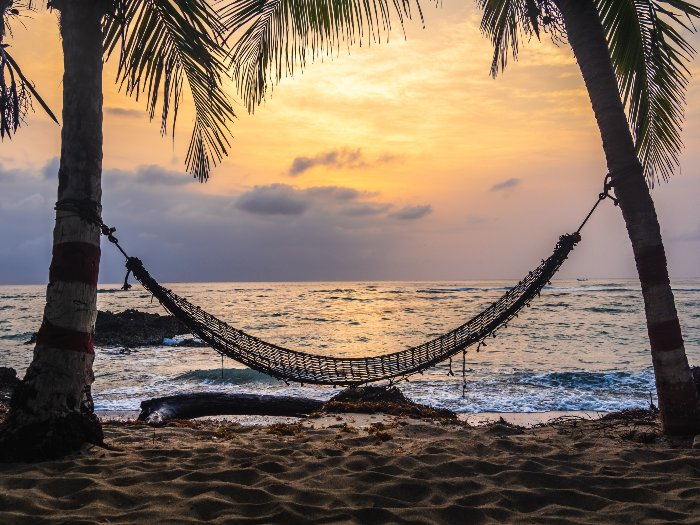

Tours We Recommend
Counter-Clockwise around the Island
With no stops it takes about 60 minutes to drive around the entire island, but we all know there are too many beautiful places not to stop! Plan on at least 4 hours but if you like to explore it will take more than one day.
There are so many places to to stop around the island to snorkel, buy drinks or food. Stretch your toes in the sand, try new foods, and splash in the ocean.
Drive the East side of the Island
The east side of Cozumel is the most scenic and the ocean will always be in sight. There are beaches, restraunts, bars to stop at along the drive.
Drive to the southern tip of Cozumel
At the souther tip of the island is Punta Sur, an eco beach park that you can pay an entrance fee to get in.
Central Island
Drive the road less traveled, away from the ocean and towards the Mayan Ruins.
Places to Visit
Chankanaab National Park

Entrance fee of $25USD for adults and $18USD for children. 15 minutes from San Miguel by taxi or car.
Snorkeling, diving, beautiful beaches, tropical fish and sea lions. If you don't want to explore you can relax with a massage by the lagoon, try tortillas made by hand in the Mayan House or relax in hammocks. 5 miles from downtown Cozumel and 3.5 miles from the Cruise Terminals.
For more information visit cozumelparks.com
Punta Sur Eco Beach Park
Entrance for adults costs $18USD and admission for children costs $11USD. A special package has a fee of $32USD for adults and $26USD for kids, 4 to 12 years old. It includes entrance to Punta Sur, Mexican lunch, snorkel gear rental or a 5 minute massage.
The beach park encompasses the entire souther tip of Cozumel. Sights include a crocodile swamp, a lighthouse, and a sea turtle nesting area. Inside the lighthouse is a museum on the history of Cozumel, including the Mayans and pirates! There are also restraunts and bars, a spa, kayak rentals and snorkel rental if you opted for the massage. 21.5 miles from downtown Cozumel and 20 miles from the Cruise Terminals.
For more information visit cozumelparks.com
San Gervasio
Entrance fee of $10.75USD.
Archaeological site that is considered the center of Mayan worship for the Goddess Ixchel. There are six Archaeological sites and a network of white roads called “sacbés”. There is guide service, a snack bar and souvenir stores. 2.5 miles from downtown Cozumel and 3.9 miles from the Cruise Terminals.
For more information visit cozumelparks.com
Cozumel Museum
Admission of $11USD, children under 3 are free.
Visit the Cozumel Museum to learn about the orgin of Cozumel, development and customs of the people. 2.5 miles from downtown Cozumel and 8 miles from the Cruise Terminals.
For more information visit cozumelparks.com
Playa Corona
No admission cost.
Located on the old coast road. The road has become a one way and because of it the beach is not as full but lends to fantastic Snorkeling and beautiful beaches. 6 miles from downtown Cozumel and 3.8 miles from the Cruise Terminals.
For more information visit thisiscozumel.com